NUEVA VERSIÓN VROpenXR 1.14.3 // XRI 3.0.11Windows (.exe) & Quest (SDK 29)
Avances de la Nueva Versión
Identidad visual del juego (logotipo, paleta cromática y mockups), migración a OpenXR y XR Interaction Toolkit, inventario en cintura (CinturonVR), menú principal, colisiones, combate e IA, partículas y 3 niveles hasta el Jefe Final.
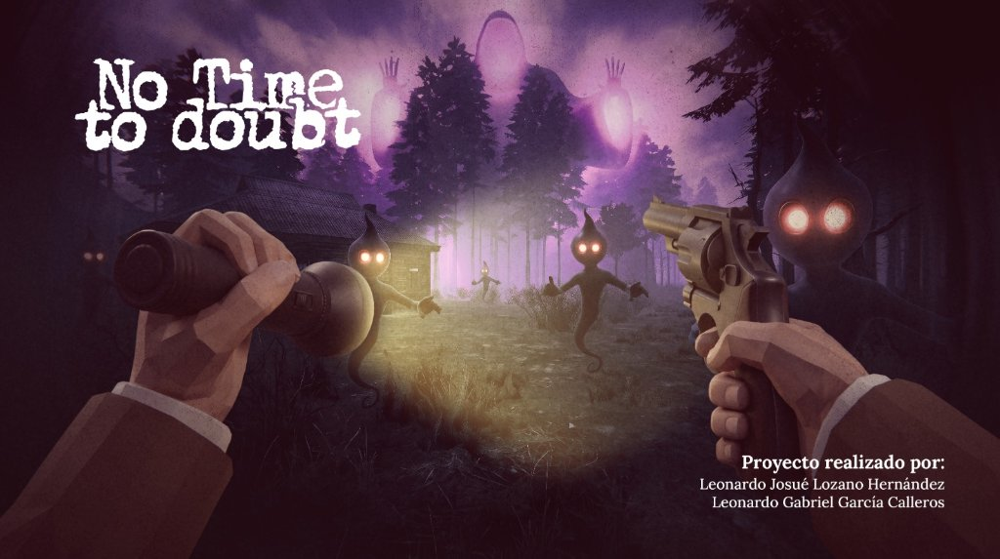
Portada Oficial — No Time to Doubt
Arte conceptual y presentación: Leonardo Josué Lozano Hernández y Leonardo Gabriel García Calleros
[LOGOTIPO & PALETA CROMÁTICA]SUSPENSO // NOIR // TERROR
Diseño del Logotipo y Códigos de Color Oficiales
Desarrollamos la identidad gráfica de No Time to Doubt con una tipografía texturizada de bordes desgastados que evoca misterio, deterioro y tensión psicológica. Se estableció una paleta de cuatro colores base para el juego y su material promocional:
#4b1426
Vino / Tinto Suspenso
#17433f
Verde Pino / Bosque
#558467
Verde Salvia / Musgo
#efeabb
Crema Pergamino / Luz
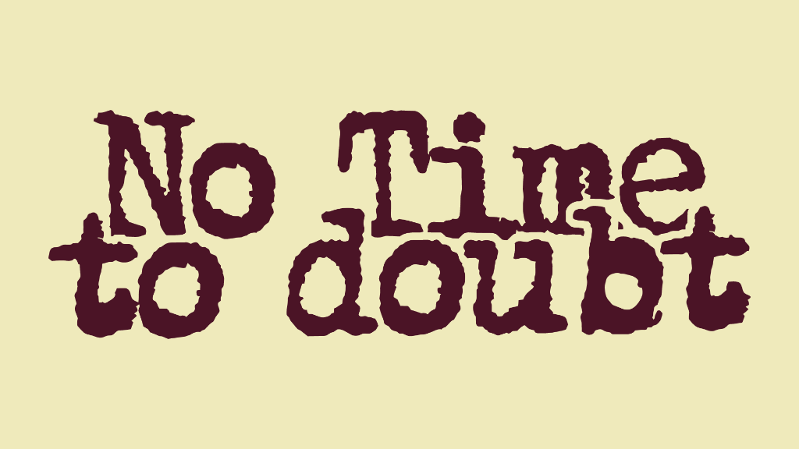
Logo — Variante Fondo Crema
Texto en color vino (#4b1426) sobre crema (#efeabb)
Diseñamos dos mockups que sitúan la narrativa del juego en una atmósfera de investigación y peligro constante:
Mockup 01 — Carpeta de Expediente: Carpeta de archivo confidencial sobre escritorio rústico con el logo troquelado, acompañada de lupa de investigación, pluma, balas de revólver y las llaves de la cabaña.
Mockup 02 — Póster Metálico con Impactos de Bala: Acabado oscuro desgastado con perforaciones reales de proyectil y relieve tipográfico en tonos pergamino y tinto.
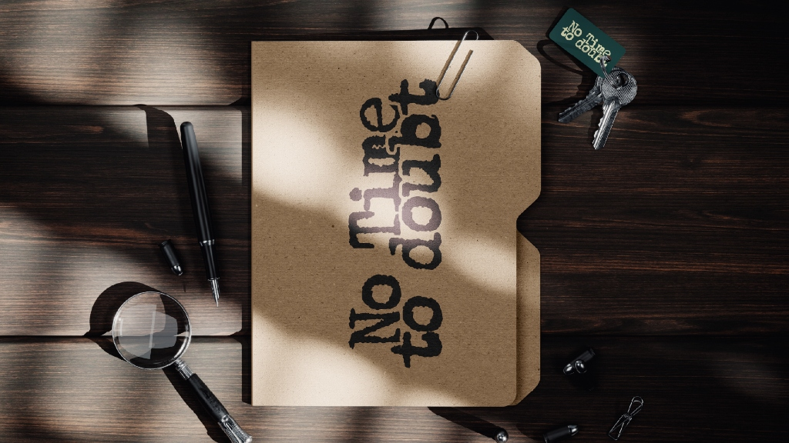
Mockup 01 — Carpeta de Archivo & Investigación
Escritorio con expediente, pluma, lupa, llaves y balas
Ampliar
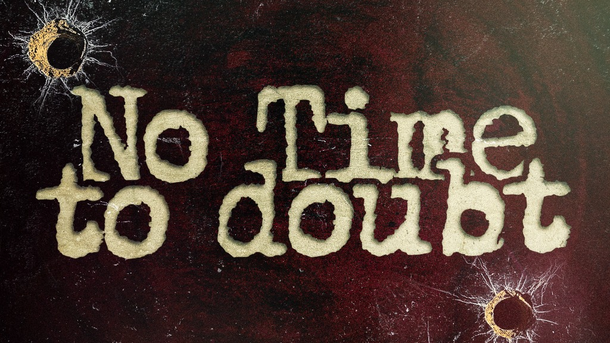
Mockup 02 — Póster con Impactos de Bala
Textura metálica grunge con orificios de proyectil y relieve
Rig Player-VR, Fundas en Cintura, Menú VR y Resaltado de Objetos
Paquetes y Rig VR:xr.interaction.toolkit (3.0.11), xr.management (4.7.0), xr.openxr (1.14.3) y XRDeviceSimulatorSettings.asset. Rig Player-VR / XR Origin con movimiento/giro continuo o SnapTurn y manos animadas con AnimateHandOnInput (Trigger/Grip).
Mandos Quest y Apuntado: Soporte híbrido (sticks, gatillo, grip, A/X/B/Y) en MovimientoJugador, JugadorDisparo, JugadorAtaque, JugadorAtaqueCuerpoACuerpo, AgarrarArma y SeleccionarPuerta, más GestorManosVR, SeguidorManoVR, SeguidorVisorVR, InvertirPitchVR y PunteroLaserVR.
Cinturón en Cintura (CinturonVR + GuardarEnCinturon): Sigue al jugador a 0.65f bajo la cámara con zona muerta de cuello (55f) para ver FundaLinterna y FundaRevolver sin que roten; al soltar un ítem activa rb.isKinematic = true y lo regresa a su funda.
Menú Principal (Menu.unity) y Pausa VR:GameStartMenu, fundidos (SceneTransitionManager / FadeScreen), opciones guardadas en PlayerPrefs (volumen y tipo de giro), AudioManager/UIAudio y MenuPausaVR a 1.5f m frente a la cámara (Time.timeScale = 0f).
Feedback Visual y Sonoro:ResaltarObjeto hace parpadear _EmissionColor en URP (T_Batton-Resaltado.mat, DoorsMap01-Resaltado.mat) hasta recoger el objeto; ControladorSonidosVR sincroniza pasos 3D con CharacterController.isGrounded y respiración 2D.
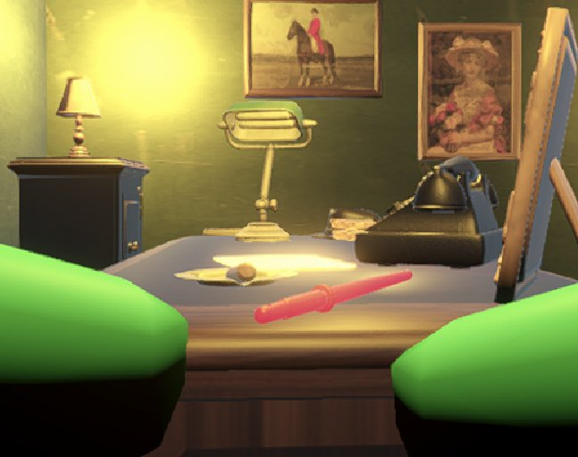
Porra Resaltada y Manos VR (Prologo.unity)
Parpadeo URP con T_Batton-Resaltado.mat y telefono.fbx en escritorio
Ampliar
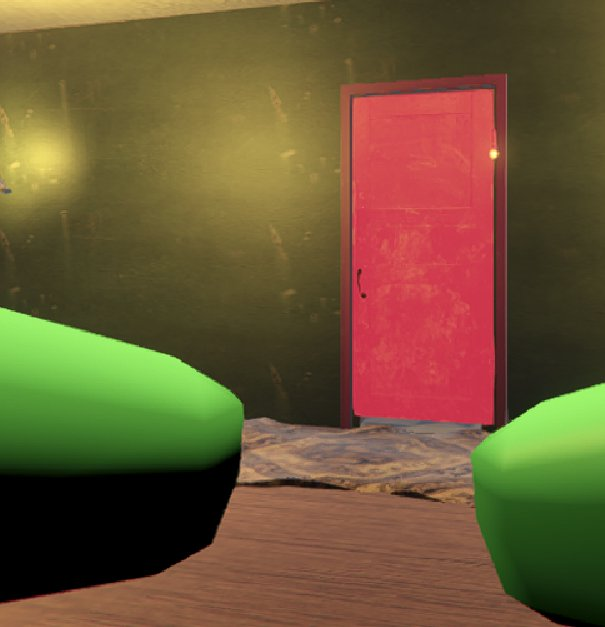
Puerta Interactiva Resaltada (Prologo.unity)
Material emisivo DoorsMap01-Resaltado.mat y mancha en el piso
03. Corrección de Colisiones, Puertas con Llave y Combate IA
[FÍSICAS, NAVMESH, PUERTAS Y ARMAS VR]CHARACTERCONTROLLER // NAVMESHSURFACE // SLERP
Prevención de traspasar muros, NavMesh en Nivel 2, Cerraduras y Combate
Colisiones y Suelos:CharacterController en Player-VR (en las 3 escenas) conectado a XRBodyTransformer (m_UseCharacterControllerIfExists: 1), MeshCollider en paredes/pisos de Prologo.unity y NavMeshSurface en Nivel 2.
Fixes en Scripts: Desbloqueo al mirar verticalmente al suelo en MovimientoJugador (sqrMagnitude < 0.01f); persecución fija en plano XZ en SeguirEnemigoPlano; apagado de Collider y AtaqueEnemigo al morir en SaludEnemigo.
Puertas y Cerraduras VR:PuertaAbreYCierraVR con rotación suave (Quaternion.Slerp) y sonidos propios; CerraduraVR desbloquea al tocar la capa Llave y destruye la llave; TrampaPuerta cierra y bloquea de golpe.
Persecución, Armas y Builds:SeguirJugadorVR sobre NavMesh, oleadas con SpawnerFantasmas / ActivarSpawnsBosque, daño cuerpo a cuerpo con ArmaCuerpoACuerpoVR (porra) y disparo con Pistol / BalaJugador. UI en Assets/CodigoVR/Canvas/, render con DecalRendererFeature + AmplifyColor y builds para Windows (.exe) y Quest (SDK 29).
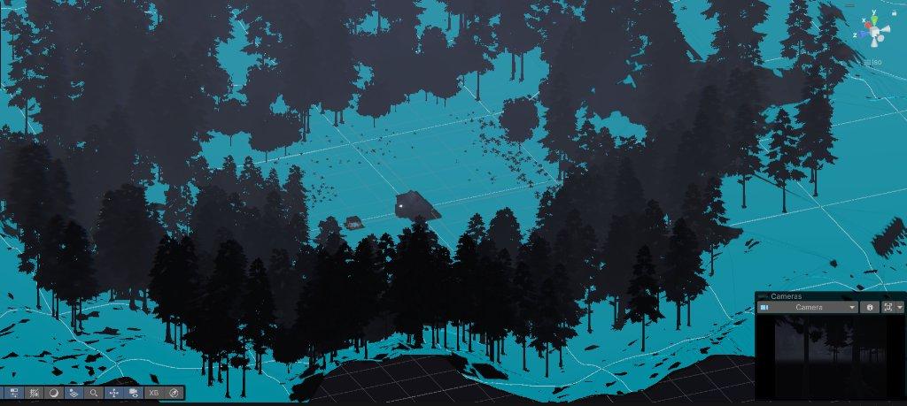
NavMeshSurface en Nivel 2 (Scene View)
Terreno navegable horneado alrededor de la cabaña y el bosque en CasaNIvel2-Terreno.unity
04. Iluminación, Secuencia de Apagón y Sistemas de Partículas
[APAGÓN, NIEBLA NOCTURNA Y HUMO]M_FOG: 1 // NOCHE.MAT // ASSETS/PARTICLESYSTEM/
Parpadeo de Luces con Linterna, Cielo Nocturno y 66 Sistemas de Partículas
Secuencia de Apagón: Al tomar la linterna por primera vez, ControladorLucesCasa conectado a LinternaVR ejecuta 3 parpadeos, apaga la casa y reproduce LucesApagadas.mp3.
Atmósfera, Niebla y Audio: Luces ambientales y focales por escena, niebla activa (m_Fog: 1) en Nivel 2 y Nivel 3, skybox Noche.mat con cubemap propio y audios (MusicaPesadillasBosque.mp3, lluvia/tormenta ASMR).
Sistemas de Partículas (66 colocados): Nuevos materiales en Assets/ParticleSystem/ (Smoke.mat, Circulo.mat, PuntoDeLuz.mat) y humo al aparecer/morir enemigos con SaludEnemigo.GenerarEfectoHumo(). Repartidos en: 56 en Nivel 2, 6 en Nivel 3 (ParticulasRodearMapa), 3 en Prólogo y 1 en Menú (HumoPuro).
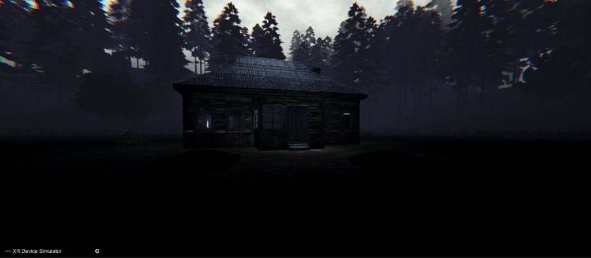
Cabaña con Niebla en Nivel 2 (VR)
Iluminación exterior, niebla activa (m_Fog: 1) y post-procesado en XR Device Simulator
Ampliar
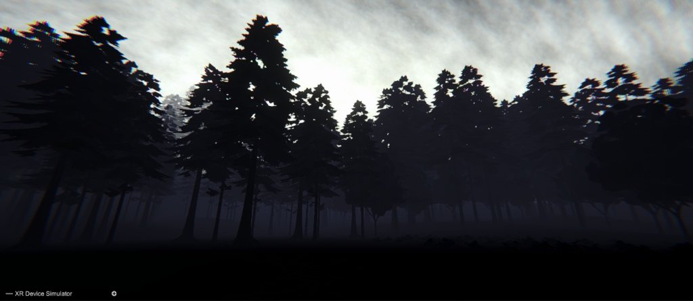
Bosque Nocturno en Nivel 2 (VR)
Siluetas de pinos bajo niebla espesa y perfil de color URP
Ampliar
05. Niveles & Jefe Final[PROLOGO → CASA NIVEL 2 → NIVEL 3]
05. Conexión de los 3 Niveles, Combate Multifase y Pendientes
[PROGRESIÓN DE ESCENAS Y COMBATE EN 3 FASES]PROLOGO // CASANIVEL2-TERRENO // NIVEL 3
Flujo del Nivel 1 al Nivel 3 y Enfrentamiento contra el Jefe
Nivel 1 (Prologo.unity): Oficina, pasillo y cuarto seguro con nuevos props (silla.fbx, telefono.fbx, AnticBed.fbx, Llave.fbx). Jugable con cinturón, porra, linterna, llave, persecución (ActivadorFaseUno) y zona segura (ActivadorZonaSegura). La cama AnticBed usa CambiarNivelVR hacia Nivel 2.
Nivel 2 (CasaNIvel2-Terreno.unity): Recoger linterna dispara el apagón y spawns interiores, apertura con llave, horda en el bosque, ocultado de la casa (OcultarCasa) y activación del portal TP-FinalBoss (PortalNivelVR) al vaciar GestorDeHorda.
Nivel 3 (Nivel 3.unity — Arena del Jefe):Fase 1 (JefeFase1 + GeneradorMinions): 30s invulnerable teletransportándose entre puntosTeleport, lanzando ProyectilJefe con ambas manos e invocando minions.
Fase 2 (ControladorFase2): Oculta pilares y activa artefactos con botones VR (BotonArtefactoFase2) que pasan a verde.
Fase 3 / Daño (SaludJefe): Se activa la vulnerabilidad para bajarle la barra de vida a disparos hasta DerrotarJefe().
Detalles pendientes por cerrar: (1) En TP-FinalBoss cambiar Nivel3 por Nivel 3 y añadir Nivel 3.unity a Scenes In Build; (2) adjuntar el script y referencias al objeto GestorDeHorda en Nivel 2; (3) agregar cinemática visual de Fase 3 en IniciarFase3() / DerrotarJefe(); (4) asignar script de interacción a telefono.fbx en Prólogo.
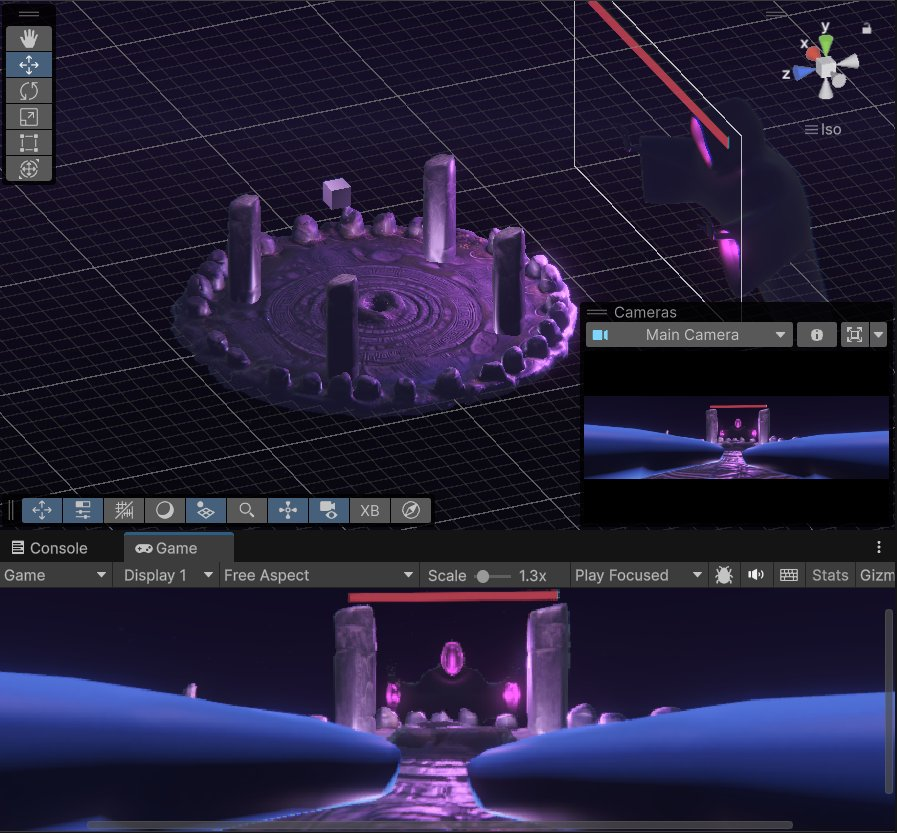
Nivel 3 — Arena y Jefe Final (Editor & Game)
Plataforma circular, 4 pilares, jefe y barra de vida UI
Ampliar
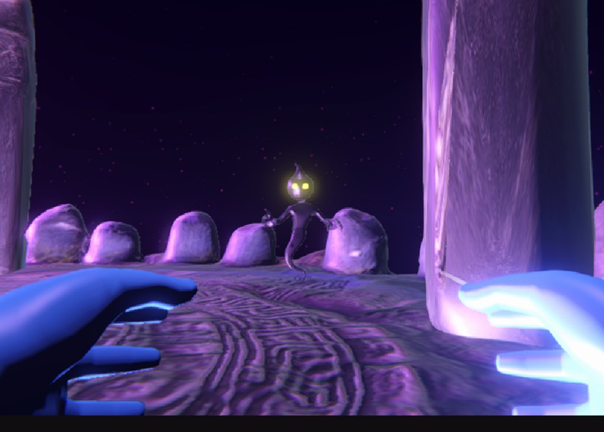
Nivel 3 — Minion en Combate (Vista VR)
Manos VR frente a MinionNivel3.prefab bajo cielo Noche.mat
Ampliar
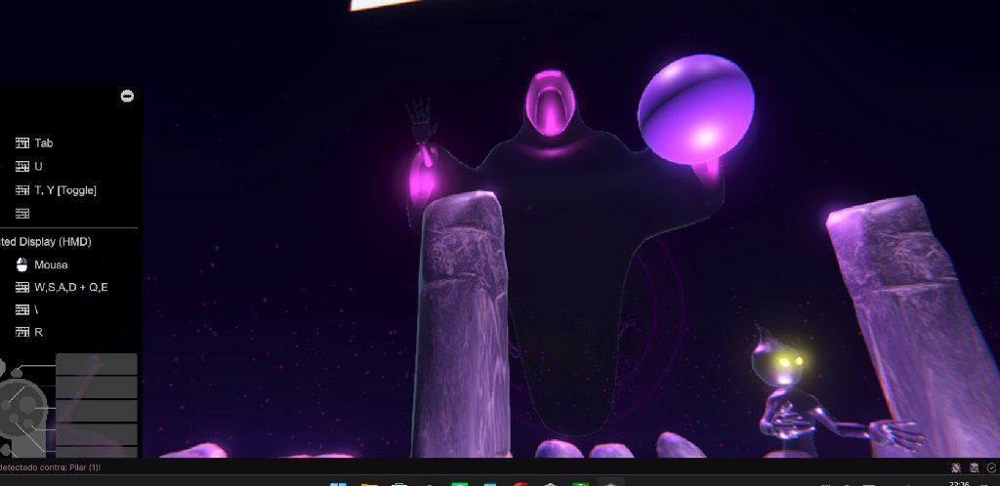
Nivel 3 — Jefe Lanzando Proyectil
Esfera ProyectilJefe y panel de controles XR Device Simulator
Ampliar
Animación del Proyecto[CINEMÁTICA // ANIMACIÓN 3D]
06. Animación Promocional / Cinemática
Video de animación conceptual de No Time to Doubt, mostrando la atmósfera de terror, la ambientación nocturna y la tensión del encuentro con las entidades.